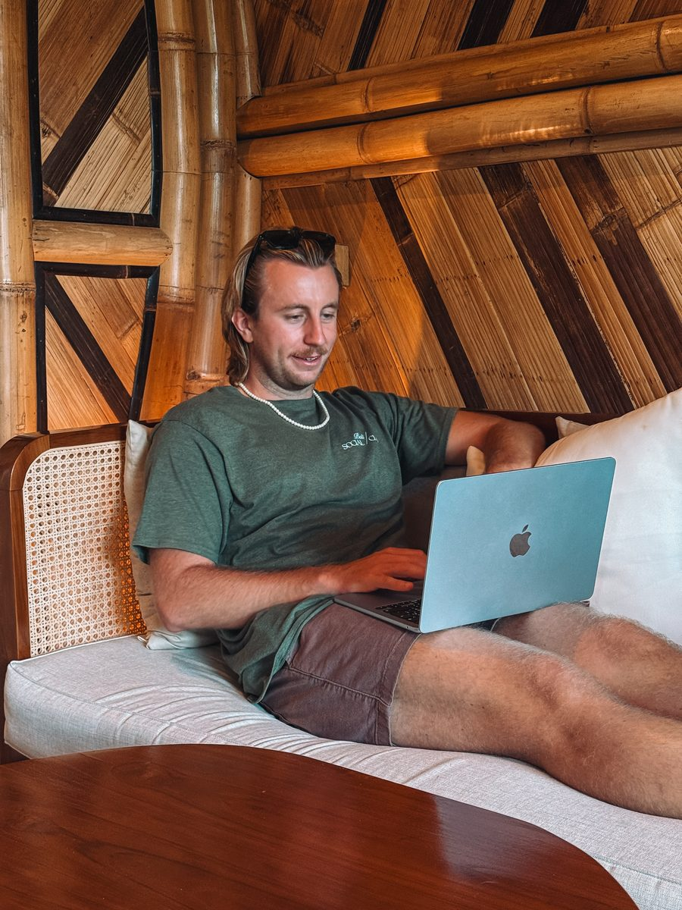

Des vidéos, des posts, des blogs, des guides. Il y en a des milliers sur ta destination, et ils disent tous que tout vaut le détour. Trouver de l'information n'est plus le problème depuis longtemps.
Le problème, c'est de trancher. Quoi garder et quoi supprimer. Dans quel ordre enchaîner les étapes. Combien de nuits à chaque endroit. Comment aller d'un point à l'autre sans y laisser une journée. Ce qui mérite vraiment ton temps, et ce qui n'en vaut pas la peine pour ton voyage à toi.
C'est exactement là que j'interviens.
Ce que je t'aide à éviter
Ce que tu gagnes vraiment
Tu n'achètes pas un document. Tu achètes un voyage mieux organisé, et les heures que tu ne passeras pas à l'organiser.
À quoi ça ressemble concrètement
Exemple pédagogique, écrit pour illustrer la démarche. Ce n'est pas un témoignage client.
Ce qui arrive dans ma boîte de réception
« Je pars 12 jours à Bali. Je veux voir Ubud, Amed, Nusa Penida, Canggu, Uluwatu et les Gili. Mais je ne sais pas si c'est réaliste. »
Six étapes en douze jours
- Ubud
- Amed
- Nusa Penida
- Canggu
- Uluwatu
- Les Gili
- Des transferts dans tous les sens
- Aucun ordre logique entre les étapes
- Plus d'activités que de journées disponibles
Ce que je renvoie
« Deux de ces étapes vont te coûter presque autant de route et de bateau que de temps sur place. Voici les quatre que je garderais, et dans cet ordre. »
Quatre étapes, dans cet ordre
- Ubud
- Nusa Penida
- Uluwatu
- Canggu
Retirées : Amed les Gili
- Moins de trajets, plus de temps sur place
- Un ordre qui évite de repasser deux fois au même endroit
- Une fin de voyage près de l'aéroport
- Un programme que tu peux réellement suivre
Le but n'est pas de caser le plus de destinations possible. Le but est de construire le meilleur voyage possible avec le temps dont tu disposes.
Je ne te donne pas une liste d'endroits
Une liste, tu l'as déjà. En trois recherches, tu trouves les vingt lieux à voir sur ta destination. Ce que tu n'as pas, ce sont les réponses aux questions qui suivent.
- Quelle étape supprimer parce qu'elle coûte une journée de trajet pour quelques heures sur place ?
- Combien de nuits rester à chaque endroit, sans se sentir pressé ni s'ennuyer ?
- Dans quel ordre faire les étapes pour ne pas traverser deux fois le même trajet ?
- Quel transport vaut réellement son prix sur ce tronçon, et lequel te fait perdre ta journée ?
- Est ce que cette activité vaut la demi journée qu'elle prend, compte tenu du reste de ton programme ?
- Est ce que ton itinéraire est réaliste, ou trop chargé de deux étapes ?
Répondre à ça demande de connaître le terrain et d'accepter de dire non à des endroits pourtant très beaux. C'est le travail que tu paies.
Tu pourrais tout faire seul
C'est vrai, et je ne vais pas prétendre le contraire. Tout est en ligne, gratuitement, y compris sur ce site. La vraie question n'est pas de savoir si tu peux. C'est de savoir combien d'heures tu veux y passer, et à quel point tu es sûr de tes choix une fois que c'est fini.
ChatGPT, Google, TikTok et les blogs sont excellents pour trouver des idées. Ils te donneront cinquante propositions en quelques minutes. Mon rôle commence juste après : garder les dix qui ont du sens pour ton voyage, dans le bon ordre, sur le temps dont tu disposes.
Trouver cinquante idées est devenu gratuit. Savoir lesquelles supprimer, beaucoup moins.
Des recommandations qui viennent du terrain
Je ne construis pas ton voyage uniquement à partir de listes trouvées en ligne. Je m'appuie aussi sur mes propres voyages et sur ce que j'ai pu tester moi même.
Les destinations que je connais de première main sont celles que je documente ici : Bali, Komodo, le Laos, la Thaïlande, le Vietnam, les Philippines et New York.
Pour une destination que je n'ai pas faite, je te le dis avant qu'on commence, et on décide ensemble si ça vaut le coup. Je ne prétends pas non plus avoir testé chaque hôtel ou chaque restaurant que je te propose : quand une recommandation vient d'ailleurs que de mon expérience, je te le précise.
Les trois formules
Tu choisis selon le travail que tu veux garder pour toi. Le prix est fixé avant qu'on commence et il ne bouge plus.
L'audit
59 €forfait, quelle que soit la durée du voyage
Tu as déjà ton itinéraire. Je te dis ce que je changerais.
Ce que ça t'apporte :
- Tu sais où ton plan va coincer, avant d'avoir réservé
- Tu reçois un retour écrit, point par point, sur ce qui ne tient pas
- Tu vois quelles étapes ne rentrent pas dans le temps dont tu disposes
- Tu sais ce qu'il faut réserver tout de suite, et pourquoi
- Tu évites les erreurs classiques sur ta destination
- Tu repars avec les deux ou trois changements qui font la vraie différence
Un aller retour écrit, sous 72 heures. Pour aller plus loin, l'itinéraire complet prend le relais.
Faire relire mon itinéraireRecommandé
L'itinéraire complet
249 €jusqu'à deux semaines de voyage
Tu pars de zéro. Je construis ton voyage de bout en bout.
Ce que ça t'apporte :
- On cadre ensemble tes dates, ton budget, ton rythme et tes contraintes
- Tu sais exactement comment structurer ton voyage, jour par jour
- Tu évites de perdre ton temps dans des trajets mal choisis
- Tu as des hébergements dans ta gamme de prix, sans avoir à trier
- Tu sais quelles activités méritent la journée, et lesquelles se sautent
- Tu sais à quoi t'attendre côté budget, poste par poste
- Tu sais ce qu'il faut bloquer maintenant et ce qui peut attendre
- Tu gardes le tout dans un document clair, à emporter en voyage
Deux séries de retouches comprises. Au delà de deux semaines, 80 € par semaine supplémentaire.
Construire mon itinéraireLe sur mesure
Sur devisselon la durée et le nombre de pays
Plusieurs pays, plusieurs mois, ou un départ qui change ta vie.
Ce que ça t'apporte :
- Tout ce que comprend l'itinéraire complet
- Un itinéraire qui tient sur plusieurs pays ou sur plusieurs mois
- Un suivi pendant toute la préparation, jusqu'au départ
- Et pendant le voyage, quand un plan tombe à l'eau sur place
- Les arbitrages à faire vite, sans avoir à décider seul
Devis après un premier échange, toujours gratuit. Tu connais le prix avant de t'engager.
Parler de mon projetQuelle formule pour toi
| L'audit 59 € |
L'itinéraire complet 249 € |
Le sur mesure sur devis |
|
|---|---|---|---|
| Pour qui | Tu as déjà ton plan | Tu pars d'une page blanche | Long voyage ou plusieurs pays |
| Appel de cadrage | Non, un échange écrit | Oui | Oui |
| Relecture de ton itinéraire | Oui, point par point | Sans objet, je le construis | Sans objet, je le construis |
| Itinéraire jour par jour | Non | Oui | Oui |
| Trajets et transports | Les erreurs signalées | Oui, étape par étape | Oui, y compris entre pays |
| Hébergements proposés | Non | Oui | Oui |
| Activités triées | Les pièges signalés | Oui | Oui |
| Budget détaillé | Non | Oui, poste par poste | Oui, poste par poste |
| Retouches | Un aller retour écrit | Deux séries comprises | Suivi jusqu'au départ |
| Pendant le voyage | Non | Non | Oui, quand un plan tombe à l'eau |
| Durée couverte | Quelle que soit la durée | Jusqu'à deux semaines, puis 80 € par semaine | Établie avec toi |
Fais glisser le tableau vers la gauche pour voir les trois colonnes.
Tu hésites entre deux formules ? Écris moi ton projet, je te dis laquelle est la bonne. Et si l'audit suffit, je ne vais pas te vendre l'itinéraire complet.
Mes recommandations sont indépendantes
Je ne réserve rien à ta place et je ne touche rien sur ce que tu réserves à partir de ton itinéraire. Tu gardes la main sur ton argent, sur tes paiements et sur tes annulations. Les vols, les nuits et les activités restent à ta charge, évidemment.
Certains liens de ce site sont affiliés et c'est écrit sur chaque page. Ça ne change jamais ce que je te recommande, et je ne classe jamais les options par commission.
Comment ça se passe

- On échangeTu m'écris avec ta destination, tes dates, ton budget et tes envies. C'est gratuit et ça n'engage à rien. Je te réponds avec la formule qui correspond et son prix exact.
- Je construisJe transforme tout ça en un itinéraire cohérent et réaliste. Tu relis, tu me dis ce qui ne va pas, on ajuste.
- Tu pars sereinTu repars avec un plan clair, les bonnes décisions déjà prises, et le temps que tu n'as pas passé à comparer.
Tu ne sais pas quelle formule choisir ? Pas besoin de le savoir.
Parler de mon voyageTu pars en PVT en Australie ?
C'est un autre métier, avec ses propres délais et ses propres pièges. J'ai une page dédiée à cet accompagnement là.
Voir l'accompagnement PVT AustralieLes questions qu'on me pose
Est ce que tu peux organiser n'importe quelle destination ?
Je connais de première main Bali, Komodo, le Laos, la Thaïlande, le Vietnam, les Philippines et New York. Pour une destination que je n'ai pas faite, je te le dis avant qu'on commence, et on décide ensemble si ça vaut le coup.
Est ce que tu réserves les hôtels et les activités à ma place ?
Non. Je construis le programme et je t'indique quoi réserver, où et quand. Tu réserves toi même, tu gardes la main sur ton argent et sur tes annulations.
Est ce que tu touches une commission sur mes réservations ?
Rien sur ce que tu réserves à partir de ton itinéraire. Certains liens du site sont affiliés et c'est écrit sur chaque page, mais ça ne change jamais ce que je te recommande et je ne classe jamais les options par commission.
Pourquoi payer alors que je peux utiliser ChatGPT ou TikTok ?
ChatGPT, Google et TikTok sont très bons pour trouver des idées. Mon travail commence après : trier ces idées, en supprimer, les mettre dans un ordre qui tient, et vérifier que le tout est faisable sur le temps dont tu disposes. Ce n'est pas de la recherche d'informations, c'est de l'arbitrage.
J'ai déjà commencé à préparer mon voyage, c'est trop tard ?
Au contraire, c'est le meilleur moment pour l'audit à 59 €. Tu m'envoies ce que tu as, je te dis ce que je garderais et ce que je changerais.
Est ce que je peux modifier l'itinéraire après ton travail ?
C'est le tien, tu en fais ce que tu veux. Deux séries de retouches sont comprises dans l'itinéraire complet, donc si quelque chose ne te convient pas, dis le moi et on ajuste.
Est ce que tu vas m'imposer des hôtels ou des activités ?
Non. Je propose, j'explique pourquoi, et tu tranches. Si tu me dis que tu ne veux pas d'auberge de jeunesse ou pas de journée en bateau, c'est noté et je construis autour.
Combien de temps faut il prévoir avant le départ ?
Plus tu t'y prends tôt, plus tu as le choix sur les vols internes et les hébergements. Cela dit, deux semaines avant le départ, un itinéraire complet reste jouable.
Est ce que ça marche en famille, en couple ou entre amis ?
Oui, et c'est même là que le travail sert le plus. Un itinéraire pour deux personnes qui n'ont pas le même rythme, ou pour un groupe qui doit se mettre d'accord, demande plus d'arbitrages qu'un voyage en solo.
Quelle formule choisir ?
Tu n'as pas besoin de le savoir avant de m'écrire. Explique moi ton projet et je te dirai honnêtement laquelle est la plus adaptée. Si je pense que tu n'as pas besoin de moi, je te le dis aussi.
Tu veux arrêter de tourner en rond avec ton itinéraire ?
Dis moi où tu veux aller, quand, et où tu en es dans ta préparation. Je te réponds avec la formule adaptée, son prix et ce que tu recevras exactement.
Premier échange gratuit. Aucun engagement. Et si je pense que tu n'as pas besoin de moi, je te le dis aussi.
Page vérifiée et mise à jour le .